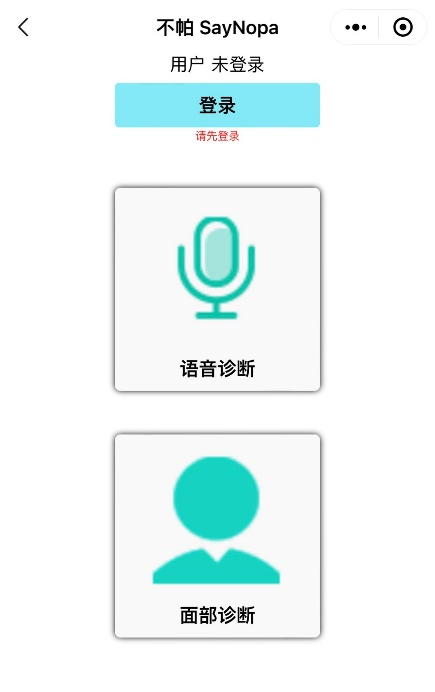

微信小程序用户手机端操作手册
1.手机端：打开微信APP,点击”微信”主界面。
2.下滑主页面，在“搜索小程序”内输入【不帕】，
3.点击进入《不帕》小程序。
1.进入小程序，点击【测试】，测试成功会显示“连接成功 延迟**s“，点击【进入程序】。
2.发生错误可能原因是：
1.进入程序后，页面显示如下
2.当用户未登陆时，点击【语音诊断】或者【面部诊断】，会出现如下错误，错误原因是：
3.没有错误后，点击【登录】，系统会自动为用户默认设置名字，如“用户1“
4.为了后台记录用户数据，建议用户修改名字，点击【信息修改】，输入名字，点击【提交】
5.结束修改后得到主页面如下图：
1.点击主页面有麦克风图片的【语音诊断】按键，因为此APP大部分使用者均为老年人，为了老年人方便点击，我们特意将点击的图片进行了放大处理。进入语音诊断界面后，首次使用的用户将会出现以下界面
2.点击绿色【允许】按键，允许该APP使用用户的麦克风。结束后，整个界面如下：
3.点击绿色【开始】按钮，进行录音，绿色圆钮文字变成“录制中“，上面进度条可以让用户实时看见录制进程。
4.录制提示：建议用户在声音录制期间发出声音，最好是一个单音节字母声音。录制结束，界面如下：
5.用户可根据自身情况，点击【重新录制】，进行重新录制声音；点击红色按钮【试听】，可试听自己刚结束录制的声音；没有问题后，点击绿色按钮【上传】，上传到服务器进行诊断。出现如下界面，请用户稍等片刻，音频文件正在上传。
6.上传成功后，出现如下界面：
7.用户可根据自身情况，点击【重新录制】，进行重新录制声音；点击红色按钮【试听】，可试听自己刚结束录制的声音；没有问题后，点击绿色长方形按键【进行诊断】，出现如下界面
8.显示正在诊断中，请用户耐心等待，随后会出现如下两种情况之一的界面
9.出现以上界面，说明经过《不帕》微信小程序诊断后，您有**%患病风险
10.出现以上界面，说明经过《不帕》微信小程序诊断后，您有帕金森病的风险， 提醒：以上所有结果均为算法得出的结果，只作为参考，不作为诊断结果，用户具体情况还需及时就医。
1.点击主页面有人头的【面部诊断】按键，因为此APP大部分使用者均为老年人，为了老年人方便点击，我们特意将点击的图片进行了放大处理。进入面部诊断界面后，首次使用的用户将会出现以下界面：
2.点击绿色【允许】按键，允许该APP使用用户的摄像头。结束后，整个界面如下
3.录制提示：建议单人用户在录制期间将整个面部放入摄像框内，并保持较小动作幅度，同时，希望用户多次反复缓慢地从普通表情，变成微笑表情，示例如下：

4.点击界面左下方【采集视频】摄像框上面文字变为“采集中“：
5.录制提示：请用户把握录制时间为5-6秒，并在录制期间小幅度完成表情从普通到微笑的变化。 点击界面右下方【停止】摄像框上面文字变为“采集完毕并上传“：
6.上传视频需要一定时间，请用户耐心等待，上传结束后，界面如下：

7.点击界面下方绿色长方形【进行诊断】，界面如下，因为诊断需要些许时间，请用户耐心等待。
8.随后会出现如下两种情况之一的界面：
9.出现以上界面，说明经过《不帕》微信小程序诊断后，您很健康。
10.出现以上界面，说明经过《不帕》微信小程序诊断后，您有帕金森病的风险。
提醒：以上所有结果均为算法得出的结果，只作为参考，不作为诊断结果，用户具体情况还需及时就医。
点击左上角 “ < “，退出诊断界面。
此小程序的建议均为算法得出的结果，只作为参考，不作为诊断结果，用户具体情况还需及时就医。
最终解释权归大连理工大学创新创业学院所有